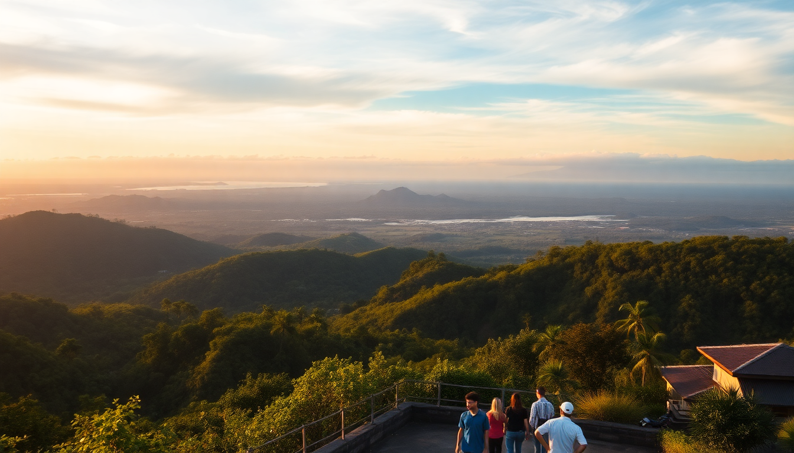

Best Day Trips from Denpasar: Ubud, Tanah Lot & Uluwatu

I landed in Denpasar with a loose plan: use the city as a base for a few days while hitting the big-name spots around Bali. What I found is that Denpasar itself is a gritty, functional hub—not a resort town—but it sits perfectly between Ubud’s rice terraces, Tanah Lot’s sunset rock temple, and Uluwatu’s cliffside surf breaks. Here’s what actually worked for day trips, including the routes, the traffic hacks, and the places I’d do again (or skip).
How far is Ubud from Denpasar, and is it worth a full day?
Ubud is about 35 kilometers north of Denpasar—roughly an hour by car if you leave before 8 AM, or 90 minutes if you hit the midday traffic around Sanur. I rented a scooter for 60k IDR per day, but if you’re not comfortable on two wheels, book a private driver for the day (around 500k IDR). It’s absolutely worth a full day, but only if you pick two or three stops, not five.
- Tegalalang Rice Terraces — Arrive by 7:30 AM to beat the tour buses. The swing photo ops cost 200k IDR and feel touristy, but the view from the top walking path is free.
- Ubud Monkey Forest — 80k IDR entry. Keep your sunglasses in your bag; the macaques snatch them. Go early or late to avoid crowds.
- Ubud Palace & Pasar Seni Ubud — The palace is small and free. The art market next door is chaotic but good for sarongs and wood carvings. Haggle hard—start at 30% of the asking price.
- Lunch at Melting Wok Warung — Tiny spot on Jalan Goutama. Their Balinese curry and crêpes are legit. No reservations, so expect a 20-minute wait.
I found Ubud’s center overwhelming by noon—too many scooters and selfie sticks. My advice: hit the rice terraces first, then retreat to a café like Seniman Coffee Studio for a cold brew, and skip the Monkey Forest if you’ve seen monkeys elsewhere.
Is Tanah Lot too crowded, or can you still enjoy it?
Tanah Lot is a sea temple perched on a rock formation, about 20 kilometers west of Denpasar. It’s undeniably scenic, but the crowds are real. I went on a Tuesday afternoon and the parking lot was full of minivans. The trick is to visit during low tide (check the tide chart online) so you can walk across the sand to the base of the temple, and stay for sunset—but don’t expect a quiet experience.
- Best time to go — 4 PM for sunset. The temple silhouette against the orange sky is the money shot. Bring cash for the 75k IDR entry fee.
- What to skip — The snake temple cave (a small donation to see a harmless python) and the overpriced buffet restaurants lining the cliff.
- Where to eat instead — Warung Sunset on the main road, 200 meters before the entrance. Their nasi campur (mixed rice) is 35k IDR and way better than anything inside the complex.
If you’re short on time, Tanah Lot is photogenic but feels like a theme park. I’d pair it with a morning at Pura Taman Ayun in Mengwi (a quieter water temple, 15 minutes inland) to balance the tourist vibe with some actual calm.
Can you do Uluwatu and Tanah Lot in the same day?
Technically yes, but I wouldn’t recommend it unless you enjoy spending four hours in traffic. Uluwatu is on the southern tip of Bali, about 30 kilometers from Denpasar but often 90 minutes by car due to narrow coastal roads. Tanah Lot is west. Doing both in one day means you’ll rush the best parts of each. Instead, I split them: one day for Uluwatu and the Bukit Peninsula, another for Tanah Lot.
- Uluwatu Temple — 50k IDR entry. The cliffside walk is stunning, but watch out for the monkeys—they’re aggressive and will grab bags. The Kecak fire dance at sunset costs 150k IDR and is worth it for the backdrop alone.
- Padang Padang Beach — 15k IDR entry. A small cove with white sand and decent waves. Go early (before 9 AM) to claim a spot. The stairs down are steep.
- Lunch at Bukit Cafe in Uluwatu village — Their acai bowls and smoothies are solid, but the real win is the free Wi-Fi and shaded patio. Good for recharging.
- Single Fin — A cliffside bar with a pool and sunset views. Drinks are pricey (80k IDR for a Bintang), but the view of the surf breaks below is unbeatable.
If you insist on combining them, start at Uluwatu at 7 AM, leave by 11 AM, then drive north to Tanah Lot for sunset. But you’ll skip the fire dance and the calm morning at Padang Padang. Not worth it in my book.
What’s the best way to get around for these day trips?
I tried three methods: scooter rental, private driver, and a shared tour. Here’s the honest breakdown:
- Scooter rental — Best for confident riders. Traffic in Denpasar is chaotic, but once you’re on the main roads to Ubud or Uluwatu, it’s manageable. Rent from Bali Bike Rental on Jalan Teuku Umar (80k IDR/day for a Honda Vario). Helmet included.
- Private driver — Most comfortable. I used Bali Sun Tours for 550k IDR for 10 hours. They speak English, know the shortcuts (like bypassing the Sanur traffic via bypass Ngurah Rai), and wait while you explore.
- Shared tour — Cheap but rigid. GetYourGuide runs a “Best of Bali” combo that hits Ubud, Tanah Lot, and Uluwatu in 12 hours. It’s rushed but fine if you’re solo and don’t want to negotiate.
My pick? Rent a scooter for Ubud (easy roads), and book a driver for Uluwatu (the winding coastal roads after dark are no joke).
Where should you stay in Denpasar for easy day trips?
Denpasar isn’t a resort destination, but it’s practical. I stayed at Hotel Inna Bali on Jalan Veteran—a no-frills place with a pool and decent breakfast for 350k IDR/night. It’s near the Bajra Sandhi Monument, which puts you 10 minutes from the highway to Ubud and 20 minutes from the airport for Uluwatu trips.
- Neighborhoods to consider — Renon (quiet, close to Ubud road) or Sanur (beachfront, more restaurants, but adds 15 minutes to Uluwatu drives).
- Where to eat in Denpasar — Warung Wardani on Jalan Diponegoro for nasi campur and ayam betutu (spiced chicken, 30k IDR). Babi Guling Ibu Oka has a branch in Denpasar that’s less crowded than the Ubud original.
- What to skip — The Bajra Sandhi Monument itself. It’s a museum about Balinese history, but the exhibits are dusty and the air conditioning is weak. Save your 50k IDR.
FAQ
Is it better to stay in Ubud or Denpasar for day trips? If you want rice terraces and yoga, stay in Ubud. If you want to spread out across multiple regions (Uluwatu, Tanah Lot, and maybe Nusa Dua), Denpasar is cheaper and more central. I stayed in Denpasar and saved about 200k IDR per night compared to Ubud, then used the savings for a private driver.
How much time should I budget for Tanah Lot? Two hours is enough, including the walk to the temple and sunset photos. Don’t plan a meal there. Instead, eat at Warung Sunset before or after, then head back to Denpasar or continue to Canggu for a quieter beach evening.
Can I visit Uluwatu without a scooter? Yes, but you’ll rely on Gojek or a driver. Public transport is nonexistent. I used Gojek for short hops (e.g., from Uluwatu Temple to Padang Padang Beach, about 40k IDR), but for the full day, a driver is more cost-effective.
Conclusion
- Ubud works best as a dedicated morning-to-afternoon trip. Hit Tegalalang and Seniman Coffee, skip the Monkey Forest if crowds bother you.
- Tanah Lot is a quick sunset stop. Pair it with Pura Taman Ayun for a quieter temple experience.
- Uluwatu deserves its own day. Do the temple and fire dance in the afternoon, then dinner at Bukit Cafe.
- Traffic is real — leave Denpasar by 7 AM for any trip, and budget 30 extra minutes for unexpected road closures.
- Stay in Denpasar for budget flexibility, or Sanur for a beach base that’s still central.